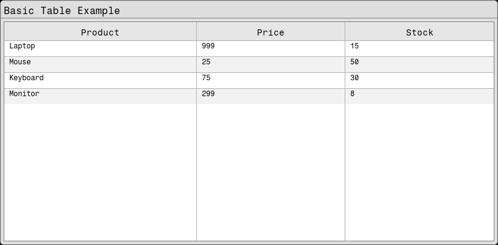
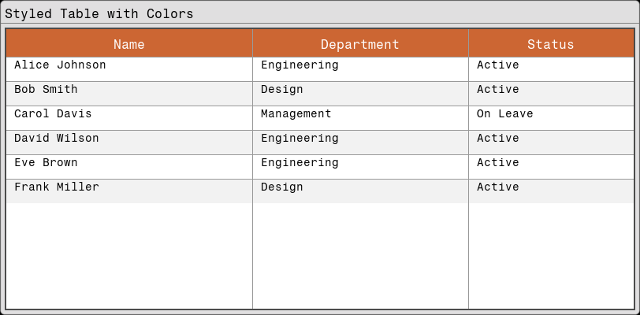
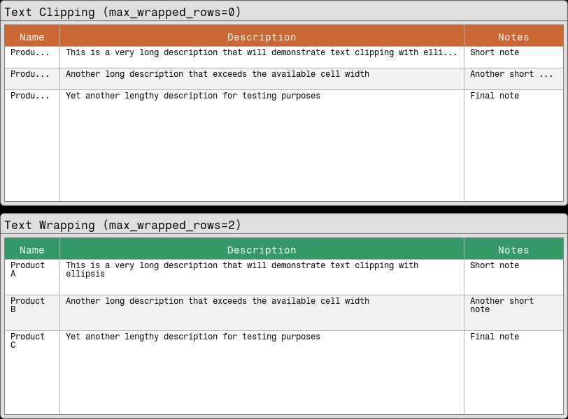
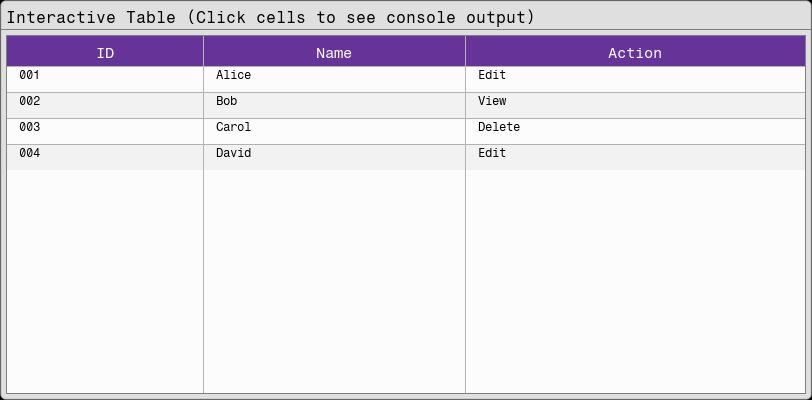
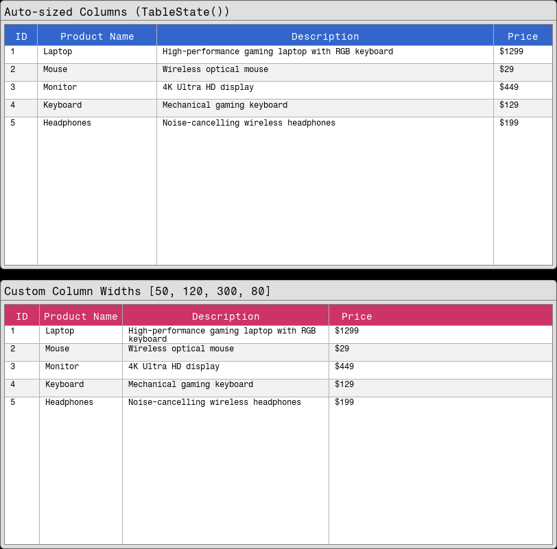

Table
The Table component provides a flexible way to display tabular data with customizable styling, text wrapping, and clipping options.
Basic Table
using Fugl
using Fugl: Table, TableStyle, Card
function MyApp()
# Simple table data
headers = ["Product", "Price", "Stock"]
data = [
["Laptop", "999", "15"],
["Mouse", "25", "50"],
["Keyboard", "75", "30"],
["Monitor", "299", "8"]
]
# Create basic table
table = Table(headers, data)
# Wrap in a card
Card("Basic Table Example", table)
end
screenshot(MyApp, "table_basic.png", 812, 400)
Styled Table with Alternating Row Colors
using Fugl
using Fugl: Table, TableStyle, TextStyle, Card
function MyApp()
# Employee data
headers = ["Name", "Department", "Status"]
data = [
["Alice Johnson", "Engineering", "Active"],
["Bob Smith", "Design", "Active"],
["Carol Davis", "Management", "On Leave"],
["David Wilson", "Engineering", "Active"],
["Eve Brown", "Engineering", "Active"],
["Frank Miller", "Design", "Active"]
]
# Create styled table with alternating row colors
styled_table = Table(
headers,
data,
style=TableStyle(
header_background_color=Vec4f(0.8, 0.4, 0.2, 1.0),
header_text_style=TextStyle(size_px=16, color=Vec4f(1.0, 1.0, 1.0, 1.0)),
header_height=35.0f0,
cell_background_color=Vec4f(1.0, 1.0, 1.0, 1.0), # White for odd rows
cell_alternate_background_color=Vec4f(0.95, 0.95, 0.95, 1.0), # Light gray for even rows
cell_text_style=TextStyle(size_px=14, color=Vec4f(0.0, 0.0, 0.0, 1.0)),
cell_height=30.0f0,
show_grid=true,
grid_color=Vec4f(0.6, 0.6, 0.6, 1.0),
cell_padding=10.0f0,
border_color=Vec4f(0.3, 0.3, 0.3, 1.0),
border_width=2.0f0
)
)
Card("Styled Table with Colors", styled_table)
end
screenshot(MyApp, "table_styled.png", 812, 400)
Text Clipping and Wrapping
using Fugl
using Fugl: Table, TableStyle, TextStyle, Card, IntrinsicColumn
function MyApp()
# Data with long text content
headers = ["Name", "Description", "Notes"]
data = [
["Product A", "This is a very long description that will demonstrate text clipping with ellipsis", "Short note"],
["Product B", "Another long description that exceeds the available cell width", "Another short note"],
["Product C", "Yet another lengthy description for testing purposes", "Final note"]
]
# Table with text clipping (no wrapping)
clipping_table = Table(
headers,
data,
style=TableStyle(
max_wrapped_rows=0, # No wrapping - clip with ellipsis
header_background_color=Vec4f(0.8, 0.4, 0.2, 1.0),
header_text_style=TextStyle(size_px=14, color=Vec4f(1.0, 1.0, 1.0, 1.0)),
cell_height=30.0f0,
cell_padding=8.0f0,
show_grid=true
)
)
# Table with text wrapping (max 2 rows)
wrapping_table = Table(
headers,
data,
style=TableStyle(
max_wrapped_rows=2, # Allow up to 2 rows of wrapped text
header_background_color=Vec4f(0.2, 0.6, 0.4, 1.0),
header_text_style=TextStyle(size_px=14, color=Vec4f(1.0, 1.0, 1.0, 1.0)),
cell_height=50.0f0, # Taller cells for wrapped text
cell_padding=8.0f0,
show_grid=true
)
)
IntrinsicColumn([
Card("Text Clipping (max_wrapped_rows=0)", clipping_table),
Card("Text Wrapping (max_wrapped_rows=2)", wrapping_table)
], spacing=10.0f0, padding=0.0f0)
end
screenshot(MyApp, "table_clipping.png", 812, 600)
Interactive Table
using Fugl
using Fugl: Table, TableStyle, TextStyle, Card
function MyApp()
# Interactive table data
headers = ["ID", "Name", "Action"]
data = [
["001", "Alice", "Edit"],
["002", "Bob", "View"],
["003", "Carol", "Delete"],
["004", "David", "Edit"]
]
# Create interactive table with click handling
interactive_table = Table(
headers,
data,
style=TableStyle(
header_background_color=Vec4f(0.4, 0.2, 0.6, 1.0),
header_text_style=TextStyle(size_px=15, color=Vec4f(1.0, 1.0, 1.0, 1.0)),
cell_background_color=Vec4f(0.99, 0.99, 0.99, 1.0),
cell_padding=12.0f0,
show_grid=true,
grid_color=Vec4f(0.7, 0.7, 0.7, 1.0)
),
on_cell_click=(row, col) -> begin
println("Clicked row $row, column $col: $(data[row][col])")
end
)
Card("Interactive Table (Click cells to see console output)", interactive_table)
end
screenshot(MyApp, "table_interactive.png", 812, 400)
Table with Custom Column Widths
using Fugl
function MyApp()
# Product data with varying content lengths
headers = ["ID", "Product Name", "Description", "Price"]
data = [
["1", "Laptop", "High-performance gaming laptop with RGB keyboard", "\$1299"],
["2", "Mouse", "Wireless optical mouse", "\$29"],
["3", "Monitor", "4K Ultra HD display", "\$449"],
["4", "Keyboard", "Mechanical gaming keyboard", "\$129"],
["5", "Headphones", "Noise-cancelling wireless headphones", "\$199"]
]
# Auto-sizing table (default behavior - no column widths specified)
auto_state = Ref(TableState()) # column_widths=nothing, so auto-calculate
auto_table = Table(
headers,
data,
style=TableStyle(
header_background_color=Vec4f(0.2, 0.4, 0.8, 1.0),
header_text_style=TextStyle(size_px=14, color=Vec4f(1.0, 1.0, 1.0, 1.0)),
cell_padding=8.0f0,
show_grid=true
),
state=auto_state[],
on_state_change=(new_state) -> auto_state[] = new_state
)
# Custom column widths table
custom_state = Ref(TableState([50.0f0, 120.0f0, 300.0f0, 80.0f0])) # Explicit widths
custom_table = Table(
headers,
data,
style=TableStyle(
header_background_color=Vec4f(0.8, 0.2, 0.4, 1.0),
header_text_style=TextStyle(size_px=14, color=Vec4f(1.0, 1.0, 1.0, 1.0)),
cell_padding=8.0f0,
show_grid=true,
max_wrapped_rows=2 # Allow text wrapping in description column
),
state=custom_state[],
on_state_change=(new_state) -> custom_state[] = new_state
)
IntrinsicColumn([
Card("Auto-sized Columns (TableState())", auto_table),
Card("Custom Column Widths [50, 120, 300, 80]", custom_table),
], spacing=15.0f0, padding=0.0f0)
end
screenshot(MyApp, "table_state.png", 812, 800)